Optagelsesprøve til de gymnasiale uddannelser
Onsdag den 8. april 2026
Kl. 10.00-14.00
Du har i alt 4 timer til prøven. Du bestemmer selv, i hvilken rækkefølge du besvarer opgaverne, og hvor lang tid du bruger på opgaverne i hvert fag.
Det er ikke tilladt at bruge internettet som fagligt hjælpemiddel eller foretage søgninger på
internettet, fx ved hjælp af Google.
Det er ikke tilladt at kommunikere med omverdenen.
Det er tilladt at benytte alle øvrige hjælpemidler, fx lærebøger, formelsamlinger, lommeregner, ordbøger, grammatiske oversigter og noter. Disse hjælpemidler kan enten medbringes på computeren eller på papir. Skolen kan tillade, at ordbøger tilgås via internettet.
Din besvarelse skal afleveres i et samlet dokument. Når du er klar til at aflevere din besvarelse, skal du gøre følgende:
- Tryk på knappen ’Dan og gem pdf’ i menuen i venstre side.
- Navngiv din besvarelse ’Optagelsesprøve’ og gem dokumentet på din computer.
- Aflever din besvarelse i Netprøver.
Optagelsesprøven er i udgangspunktet anonym for dem, som skal bedømme din besvarelse. Det er derfor vigtigt, at du ikke skriver dit navn noget sted i besvarelsen eller i titlen på dit dokument, som du afleverer i Netprøver.
Dansk
Prøven i dansk består af tre delprøver:
- Den første delprøve er en læsefærdighedsprøve, der består af to tekster. Til hver af de to tekster er udarbejdet 10 opgaver. Alle opgaver skal besvares.
- Den anden delprøve er en grammatisk færdighedsprøve, hvor teksten skal omskrives i tid.
- Den tredje delprøve er en skriftlig færdighedsprøve.
Du kan højst få 25 point i danskprøven:
| Opgave | Antal mulige point |
|---|---|
| Læsefærdighed | 12 point |
| Grammatisk færdighed | 6 point |
| Skriftlig færdighed | 7 point |
Dansk
Læsefærdighed - Tekst 1
Til teksten er der 10 opgaver. Der er kun ét rigtigt svar til hver opgave.
For at opnå 12 point i den samlede læsefærdighedsprøve (tekst 1 og 2) skal mindst 18 af de i alt 20 opgaver i prøven være korrekt besvaret.
Fuglereden
Af Lise Villadsen
Jeg vågner ved, at Martha kaster op. Lydene går gennem væggen. Hun hoster og spytter. Jeg går ind til hende. Hovedpuden er fyldt med bræk. Det lugter og damper som den gylle, de spreder på markerne herude om foråret.
„Kom, du skal i bad.“
Jeg hjælper hende ud af sengen. Kroppen er helt slap. Ude på badeværelset hiver jeg natkjolen over hendes hoved og får hende ned i badekarret. Jeg er grundig med at få klumperne af bræk ud af det lange hår.
„Jeg har det ikke særlig godt ...“
„Nej, du har kastet op, din lille tosse.“
Nogen skal blive hjemme med Martha.
„Det er din tur til at tage barns-sygedag,“ siger mor.
Far tager sin telefon frem. Nævner to dage i sidste måned, hvor han var hjemme med Martha, hvor hun også havde ondt i maven.
„Jamen jeg kan ikke være mere væk,“ siger mor. „Jeg ender med at blive fyret.“
„Så må hun komme i skole.“
„Har du virkelig samvittighed til det?“
„Ej, nu må du kraftedeme stoppe dig selv.“
Martha sidder for enden af bordet og prikker huller i sit toastbrød. Mor går hen og kører en hånd ned over det halvvåde hår.
„Har du det ikke bedre, skat? Du spiser da.“
„Hvad hvis jeg får det dårligt igen?“
„Så siger du til lærerne, at de skal ringe til far.“
Mens jeg børster tænder, går Martha i forvejen ud til cyklen. Da jeg kommer ud, står hun helt henne ved hækken og peger ind i den.
„Ellis? Se ...“
Jeg går hen til hende.
„Dér,“ hvisker hun og skubber lidt af det grønne til side, så jeg kan se den: fuglereden. Den er sammensat af en masse grene og mørkegrønt mos. Ovenpå ligger en sort fugl. Den gør sig større, da den får øje på mig. Puster sig op, breder vingerne ud og forsøger at skjule ungerne under sig, men jeg kan høre dem. De pipper, som om de er sultne.
„Kom.“ Jeg tager Martha i hånden. „Vi må ikke forstyrre dem.“
„De vil have mad, ikke?“
„Jo.“
„Hvad spiser babyfugle?“
„Det ved jeg ikke. Orme, tror jeg.“
„Skal vi finde nogle regnorme og give dem?“
„Nej, det klarer fuglemoren selv.“
Jeg følger Martha helt ind i klasselokalet. Hendes hår er blevet tørt på cykelturen, så nu ligner det en høstak. Da jeg vil sige farvel, får Martha pludselig blanke øjne.
„Jeg skulle have en gammel T-shirt med i dag,“ hvisker hun. „Én som godt må blive revet i stykker og malet på.“
„Hvorfor det?“
„Det kan jeg ikke huske. Noget med ...“
„Kan du ikke bare sige, du har glemt det?“
Hun nikker, men øjnene er stadig blanke.
Jeg tager min taske af, smider trøjen, tager T-shirten af og rækker den til hende. „Her.“
Midt i dansk banker det på døren. Marthas klasselærer stikker hovedet ind. Siger hun skal tale med mig ude på gangen.
„Martha klager over ondt i maven, og jeg kan ikke få fat i hverken jeres mor eller far. Hun siger, at hun har kastet op i morges?“
Mor skriver til mig en time efter, men da jeg ikke svarer, ringer hun op.
„Ved du, om far har hentet Martha? Jeg kan se, skolen har ringet to gange.“
„Det har han ikke.“
„Åh for fanden! Hvorfor tager han ikke sin telefon? Ej, hvor er det pinligt!“
„Jeg kørte hjem med Martha. Hun ligger på sofaen og ser tegnefilm.“
„Tak, Ellis. Bare giv hende alt det saftevand og juice, hun kan drikke. Og jeg beklager altså, at din far er sådan en idiot.“
Der er ingen, der laver aftensmad. Martha er heller ikke sulten, men mor får os alligevel til at spise rugbrød med leverpostej, der er to dage for gammel. Jeg viser mor datomærkningen. Det er far, der har glemt at købe ind, siger hun. Far lader, som om han ikke hører det. Vi får lov at se tv imens.
Klokken otte læser jeg godnathistorie for Martha i hendes seng. Selv om jeg taler højt, kan jeg ikke helt overdøve stemmerne inde i stuen.
„Hvorfor skal han have ødelagt sin skolegang, fordi du ikke kan finde ud af at tage din telefon?“
„Ødelagt sin skolegang, har du hørt dig selv?“
„Ja, jeg har hørt mig selv, jeg er faktisk ved at være rigtig træt af at høre mig selv. Hvorfor skal jeg sige det samme igen og igen?“
„Du kunne jo også bare holde kæft.“
„Sådan skal du ikke tale til mig ... hvor skal du hen?“
„Jeg går i haven, der kan man vel slippe for at høre på dit brok.“
Hun råber efter ham: „Nå, så gider du måske klippe den hæk, du lovede at klippe sidste år?!“
Jeg kigger på Martha og glemmer at læse højt. Hendes blik er meget koncentreret om billederne i bogen.
Jeg er lige faldet i søvn, da hækkeklipperen går i gang. Den brummer i fem minutter, da fars råb pludselig lyder: „Hvad fanden laver du?!“
Så mors stemme gennem larmen: „Ja, du får jo alligevel aldrig ordnet det!“
„Du kan sgu da ikke klippe hæk klokken 22!? Er du sindssyg?! Du vækker naboerne!“
Jeg står ud af sengen, går ind og kigger til Martha, men hun sover. Det er kun mig, der ikke kan falde i søvn. Heller ikke selv om mor slukker hækkeklipperen. Jeg står op, da huset er blevet stille. Sætter mig ud på trappestenen og kigger op på nattehimlen.
Næste morgen er de tavse over kaffen. Jeg kan se hækken gennem køkkenvinduet. Der er klippet et skævt stykke ned i den.
Mens jeg er ved at tage sko og jakke på, lyder der et skrig ude foran.
Vi løber alle sammen ud ad hoveddøren. Martha står og kigger fortvivlet ind i hækken.
„Den er væk!“
„Hvad er væk?“ spørger far.
„Babyerne!“ Hun begynder at græde.
Mor og far ser over på mig for at få en forklaring.
„Der var en fuglerede i går,“ siger jeg. „Med unger.“
„For helvede!“ Far slår ud med hånden mod mor. „Har du kørt klipperen over den?!“
„Nej ...“ Mor går hen og begynder at lede inde i hækken. „Den må da være her et sted. Jeg ville ikke have kørt klipperen, hvis der var en rede, det ville jeg altså have opdaget ...“
„Gu’ ville du ej. Du ser aldrig en skid.“
„Vi skal nok finde den, skat.“
Far udstøder et fnys og går indenfor igen.
Mor leder videre i ti minutter, mens Martha står og snøfter, og jeg står ved siden af hende med cyklen. Så begynder mor at gennemrode hækaffaldet, der ligger på jorden, mens hun sender nervøse blikke hen mod Martha.
„Vi er nødt til at køre nu,“ siger jeg. „Ellers kommer vi for sent.“
Om aftenen er Martha stadig ked af det. Hun vil ikke spise aftensmad. Hun vil heller ikke høre godnathistorie, da jeg vil læse for hende.
„Jeg tænker hele tiden på babyerne,“ siger hun.
„Du skal sove nu,“ siger jeg og rejser mig.
Martha begynder at klynke.
Mor kommer ind og sætter sig på sengekanten.
„Kan du ikke sove, skat?“
„Hvad er der sket med babyerne?“ spørger Martha.
„Ved du hvad?“ siger mor. „Jeg tror, fuglemoren er fløjet væk med alle sine unger og har fundet en meget bedre hæk.“
Far stiller sig op i døren. „Det var da godt nok en åndssvag historie at bilde hende ind. Du må godt nok have dårlig samvittighed.“
Mor ignorerer far og taler videre til Martha.
Jeg går udenfor. Sætter mig på trappestenen og kigger ud over markerne. Lidt efter får jeg øje på fuglen. Den kredser rundt på den lyserøde aftenhimmel. Det var kun et øjeblik, den var væk i går aftes for at finde føde. Kun nogle få minutter. Nu lander den ovenpå skraldespanden. Pirker hårdt til låget flere gange. Så kigger den hen på mig.
(2025)
1. Hvilken type fortæller er der i teksten?
x
x
x
x
2. Hvem er fortælleren?
x
x
x
x
3. Hvor lang tid strækker novellen sig over?
x
x
x
x
4. Hvad taler forældrene om ved morgenbordet?
x
x
x
x
5. Hvem følger Martha hjem fra skole?
x
x
x
x
6. Hvilken følelse får Martha henne i skolen?
x
x
x
x
7. Ellis kan bedst karakteriseres med ordene
x
x
x
x
8. Hvorfor er Marthas ”blik meget koncentreret om billederne i bogen”, da Ellis læser godnathistorie?
x
x
x
x
9. Hvad viser morens reaktion på, at fuglereden er væk?
x
x
x
x
10. I novellen er fuglereden et symbol på?
x
x
x
x
Læsefærdighed - Tekst 2
Til teksten er der 10 opgaver. Der er kun ét rigtigt svar til hver opgave.
For at opnå 12 point i den samlede læsefærdighedsprøve (tekst 1 og 2) skal mindst 18 af de i alt 20 opgaver i prøven være korrekt besvaret.
Sfo-pædagogen læste ham: ”Berit har virkelig sat min retning for livet”
Af Sara Wilkins
Det hele begynder faktisk med sfo-pædagogen Berit Fischer. Det er (dem, ham, hende, os), der allerede i 1. klasse spotter, at den unge Malthe Naundrup Nielsen har en spirende interesse, der kan vokse sig stor.
»Hun så virkelig tidligt, at mig og min ven Oliver var utrolig fascinerede af teknik, og hun rykkede bare på det med det samme«, forklarer den 22-årige elektrikerlærling i dag.
Dengang var han en nørdet og videbegærlig dreng, der elskede at rode med (elektronik, planter, stoffer, træ). Typen der legede med Rubiks-terninger og skilte alting ad – fjernbetjeninger, stereoanlæg, harddiske.
»Alt skulle skilles ad og samles igen. Jeg var ikke tilfreds med kun at bruge noget, jeg ville også vide, hvordan det (fungerede, lugtede, påvirkede, smagte)«, husker han.
I skolen sørgede Berit for, at der blev købt særlige Lego-klodser til sine teknikinteresserede elever og gav tid og plads til, at der kunne bygges store vaskemaskiner og robotter ud af skolens skumklodser.
»Berit havde bare en helt vanvittig måde at læse os børn på og kunne se lige (forbi, igennem, over, under) os. Jeg følte virkelig, at hun allerede dengang vidste, hvem jeg var, og hvad jeg kunne blive til«.
Malthe Naundrup Nielsen og hans ven Oliver begyndte at styre både lys og lyd til skolens MGP-produktioner og fik mere og mere ansvar for teknikken på Krogårdsskolen i Greve. I 3. klasse fik de – helt undtagelsesvist – lov til at købe et mixerpult-setup, der åbnede op for endnu mere tekniknørderi for de to klassekammerater. Igen var det Berit, der kæmpede det igennem.
»Den kostede omkring 3.000 kroner, og det var altså mange penge at bruge på to elever, men Berit bad om det rigtig længe, og vi fik den til sidst. Det gjorde, at vi satte os endnu mere ind i tingene og lavede alt muligt sjovt«.
De fik ansvaret for store præsentationer og dramaforestillinger i festsalen, og i sjette klasse blev de (ansat på, indskrevet i, presset af, udvist af) skolen og fik løn for otte timers arbejde om ugen.
»Vi blev ansat som it-supportere, fordi vi var de eneste, der vidste, hvordan teknikken fungerede«, griner Malthe Naundrup Nielsen. »Det var os, alle lærerne gik til«.
I 9. klasse vidste han, at han ville ud i (naturen, rummet, udlandet, virkeligheden) og bruge sine hænder endnu mere, så da hans fars fætter tilbød ham en praktikplads i en elektrikervirksomhed, slog han til. Her mødte han et andet afgørende voksent menneske i sin uddannelse, industrielektrikeren Lars Sølberg, det »flinkeste væsen i verden«.
»Lars var virkelig god til at fortælle og lære fra sig. Han fik mig aldrig til at føle mig dum og var altid klar på at (forklare, glemme, nægte, åbne) tingene igen, hvis man ikke havde fanget den første gang. Han har virkelig et specielt sted i mit hjerte. Man kunne næsten mærke på ham, at det var en mission for ham at lære os unge op, fordi han vidste, at der ville være mangel på os ude i samfundet. Så han var bare et stort forbillede og fik arbejdet til at se rart ud«.
Ugen med Lars åbnede en ny verden for Malthe Naundrup Nielsen, der efterfølgende begyndte på elektrikeruddannelsen på EUX. Det var dog ikke alle i hans familie, der var lige begejstrede for ideen. Hans forældre har lange videregående uddannelser og skulle lige sluge, at deres søn (alligevel, altid, ikke, måske) fulgte trop.
»Min mor er både uddannet psykolog og jordemoder, og min far er økonomichef og tidligere direktør, uddannet fra CBS. Så mine forældre er virkelig gået den ’rigtige’ vej, som mange i samfundet gerne vil have, at man skal gå«.
»De var (begejstrede, ligeglade, positive, skeptiske) i starten, og især min mor bekymrede sig for, om jeg havde mulighed for at læse videre på universitetet og ville få gode pensionsvilkår og sådan noget. De snakkede med mig om, hvad planen og endemålet var, men endemålet var jo at færdiggøre min uddannelse, og hvorfor er det ikke godt nok? Hvorfor skal der være en større plan? Hvis jeg nu er sindssygt (flov over, frustreret over, glad for, sur over) ’bare’ at være elektriker«.
I det hele taget har Malthe Naundrup Nielsen mødt en del fordomme på sin vej, ikke mindst blandt uddannelsesvejledere. »De snakkede nærmest aldrig om erhvervsuddannelserne, de (anbefalede, frarådede, fremhævede, konfronterede) dem nærmest«, husker han. »Så jeg er virkelig glad for, at jeg lyttede til mig selv«.
Grammatisk færdighed
Du skal følge anvisningen og besvare opgaven. Du kan højst få 6 point for din besvarelse.
Originaltekst:
Jeg vågner ved, at Martha kaster op. Lydene går gennem væggen. Hun hoster og spytter. Jeg går ind til hende. Hovedpuden er fyldt med bræk. Det lugter og damper som den gylle, de spreder på markerne herude om foråret. (….). Jeg hjælper hende ud af sengen. Kroppen er helt slap. Ude på badeværelset hiver jeg natkjolen over hendes hoved.
Skriv din redigerede version i boksen. Husk at understrege de ændrede udsagnsord som i eksemplet. Du understreger ordet ved at markere det og dernæst trykke på 'U'.
Skriftlig færdighed
Du skal følge anvisningerne i boksen nedenfor og besvare opgaven. Din besvarelse bliver vurderet ud fra følgende kriterier:
-
sammenhæng
-
grammatik
-
retskrivning
-
tegnsætning
Du kan højst få 7 point for din besvarelse.
Med udgangspunkt i novellen Fuglereden skal du skrive, hvad Ellis tænker på, da han sidder på trappestenen og ser fuglen på skraldespanden i slutningen af novellen. Du skal skrive som jegfortæller, som om du er Ellis. Du skal skrive ca. 200 ord.
Skriv din besvarelse i boksen herunder.
Engelsk
Prøven i engelsk består af fem delprøver: fire prøver i sprog og grammatik og en prøve i skriftlig fremstilling.
| Opgave | Antal mulige point |
|---|---|
| Section 1 | 4 point |
| Section 2 | 4 point |
| Section 3 | 4 point |
| Section 4 | 6 point |
| Section 5 | 7 point |
Engelsk
Section 1
Choose the right word.
There are more words than you will need. No word may be used more than once.
There is an example in the first sentence.
- dramatise
- -
- dramatises
- -
- dramatised
- -
- dramatising
- -
- drama
- -
dramatisation- -
- dramatic
- -
- dramatically
for the screen, also known as screen acting, involves actors playing characters in filmed media like movies, television, and web series.
The concert finished in a very way as a combination of fireworks and lasers lit up the evening sky.
When Chris told his mum what he had seen, he tried to the situation, but actually it wasn’t as serious as he made it seem.
The movie was full of suspense and emotional twists, making it a gripping from start to finish.
The documentary on the Battle of Waterloo, which was shown on TV last night, real historical events and made them more interesting for the viewer.
Section 2
Read the text below.
Use the word in brackets and write the correct form of the word as shown in the two examples.
Section 3
Early in the morning on 14th June 2017, a fire 3.0 (broke, started, raged, burned) out at Grenfell Tower, a 24-story block of flats in North Kensington, London. The fire began in a flat on the fourth floor. It spread quickly 3.1 (flooding, engulfing, overrunning, swamping) the entire building and burning for sixty hours. Firefighters worked hard to rescue people, but the fire was too 3.2 (alight, burning, flammable, fierce). At least 80 people died and many more were 3.3 (injured, damaged, destroyed, killed) as trapped families were advised by the emergency services to remain in their flats.
The tower block, which was built in the 1970s, was temporarily emptied in 2016 when modern cladding panels were fitted to the outside of the building as part of a planned 3.4 (repair, renovation, redesign, reworking) project. This cladding contributed to the ferocity of the fire.
In 2025 the British government announced that the building was to be pulled down.
Section 4
In the following text there are eight mistakes.
Find and replace at least six mistakes with the correct words.
There are two examples at the beginning of the text.
Section 5
- view
- -
- height
- -
- up
- -
- climb
- -
- dizzy
Matematik
Optagelsesprøven i matematik består af 18 opgaver med i alt 25 delopgaver. I hver delopgave kan du opnå 1 point. Samlet set kan du altså højst opnå 25 point i matematik.
Du må bruge bøger, noter, computer og lommeregner, men ikke internet og AI.
- Du kan skrive en brøkstreg ved at bruge dette tegn: / Eksempel: 1/3
- Du kan skrive et gangetegn ved at bruge dette tegn: * Eksempel: 2*6
- Du kan skrive en potens ved at bruge dette tegn: ^ Eksempel: 4^2
Matematik
Opgaver
Opgave 1
Skriv det tal, der er 5 større end 99.
Opgave 2
Hvilket tal er størst? (Sæt ét X)
|
1,7 |
1,14 |
1,08 |
1,078 |
1,444 |
Opgave 3
Udregn:
5 + 5 \cdot 3 =
Opgave 4
Skriv en anden brøk, der har samme værdi som \frac{6}{10}.
Opgave 5
Fire børn skal dele 1 L sodavand.
Hvor meget får de hver, hvis de deler lige?
Opgave 6
Løs ligningen.
6x - 1 = 17
Opgave 7
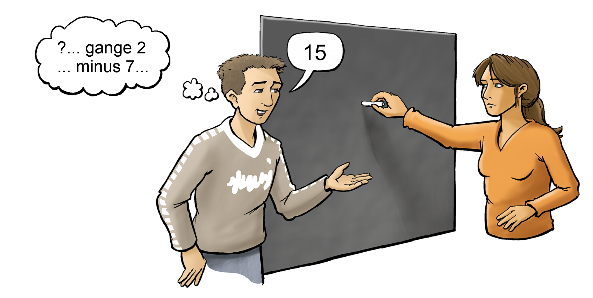
Tegning: Hans Ole HerbstPelle og Anika leger en tal-leg.
Pelle tænker på et tal. Så ganger han tallet med 2, og trækker 7 fra det nye tal, han får.
Pelle ender med tallet 15.
Anika skal skrive det tal, som Pelle startede med at tænke på.
Opgave 8
Hvor meget er \frac{1}{3} af 150 m?
Opgave 9
Hvor mange procent af eleverne er drenge?
Opgave 10
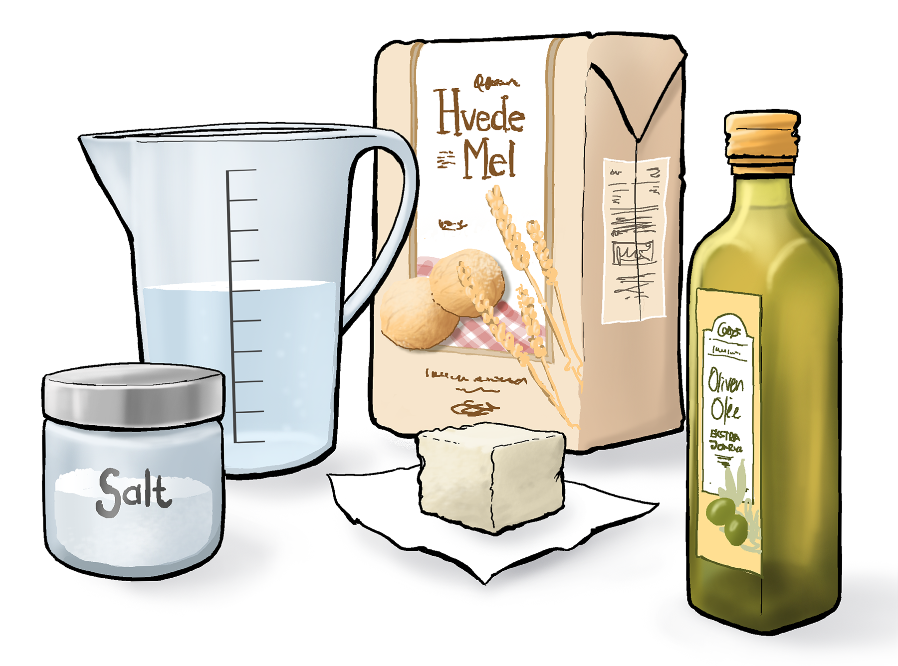
Tegning: Hans Ole Herbst50 g gær
6 dL vand
8 spiseskefulde olivenolie
2 teskefulde salt
1000 g hvedemel
Opgave 11
Hvilket udtryk har samme værdi som 3x + 1 – 2x for alle værdier af x? (Sæt ét X)
|
x^2 + 1 |
2 |
x |
x + 1 |
2x |
Opgave 12
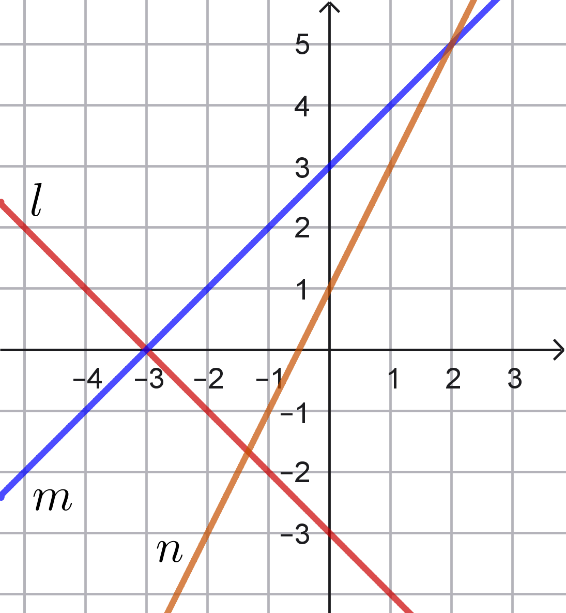
Opgave 13
Opgave 14
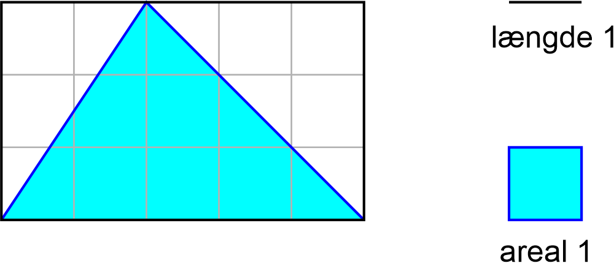
Tegningen viser et sort rektangel og en blå trekant.
Hvor stort er arealet af trekanten?
Opgave 15
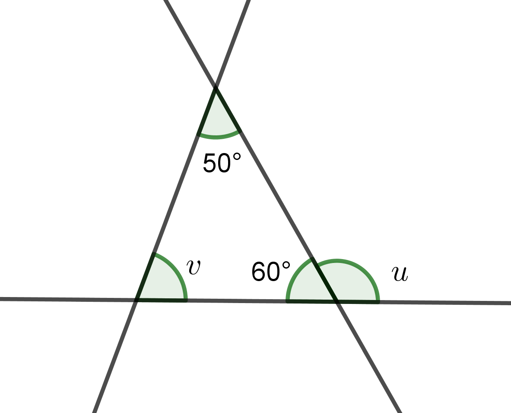
Opgave 16
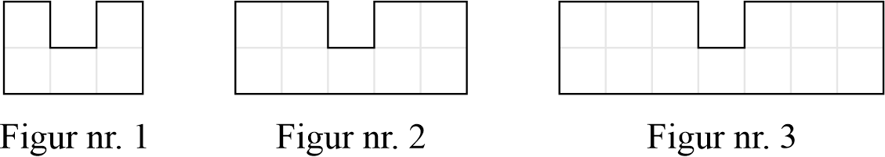
| Figur nr. | 1 | 2 | 3 |
| Antal tern | 5 | 9 | 13 |
Opgave 17
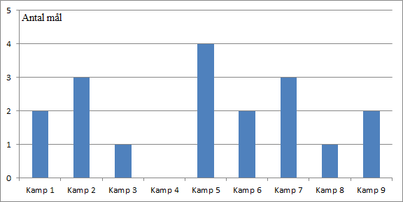
Diagrammet viser, hvor mange mål et fodboldhold scorede i 9 kampe.
Hvor mange mål scorede holdet i gennemsnit pr. kamp?
Opgave 18
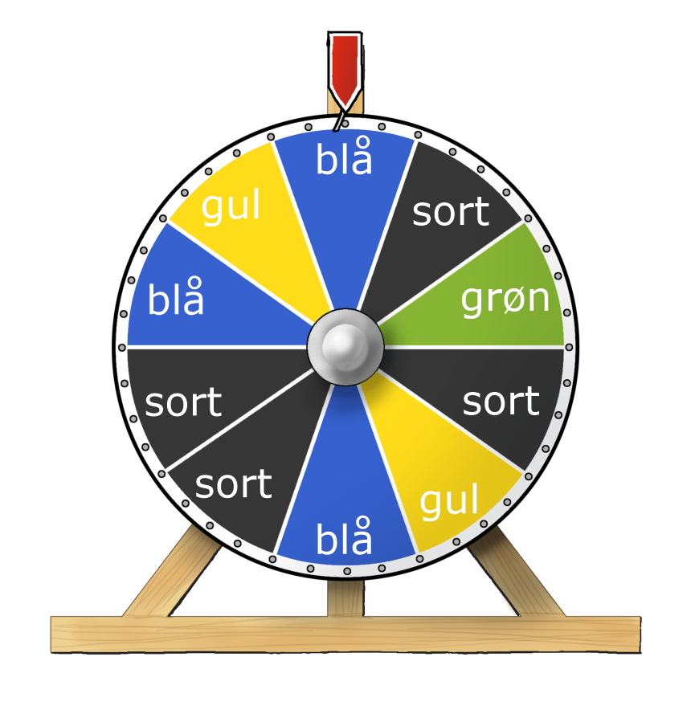
Tegning: Hans Ole HerbstFiguren viser et lykkehjul med 10 forskellige felter. Der er 4 sorte, 3 blå, 2 gule og 1 grøn. Når man drejer på lykkehjulet, er der lige stor chance for at ramme alle felter.
Hvor stor er sandsynligheden for at ramme et blåt felt?
Hvor stor er sandsynligheden for, at man IKKE rammer et sort felt?
Fysik/kemi
Prøven i fysik/kemi består af 25 opgaver, og du kan opnå 1 point i hver enkelt opgave. De 25 opgaver er fordelt på 5 områder indenfor fysik/kemi. Du kan samlet få op til 25 point.
Grundstoffernes periodesystem findes sidst i sættet.
Fysik/kemi
1. Atomer og grundstoffer
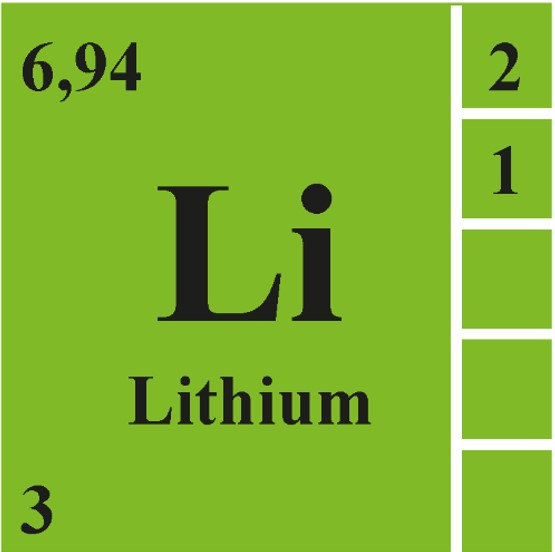
Figur 1.a: Lithium (Li) fra grundstoffernes periodesystem.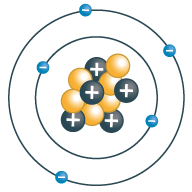
Figur 1.b: Model af et atom.| Udsagn | Sæt X |
| Det har altid samme antal protoner og elektroner. | |
| Det har altid samme antal protoner og neutroner. | |
| Det har altid samme antal elektroner og neutroner. |
| Udsagn | Sæt X |
| De to atomer har lige mange protoner. | |
| De to atomer er placeret i samme periode. | |
| De to atomer er placeret samme gruppe (hovedgruppe). |
2. Fysikkens verden
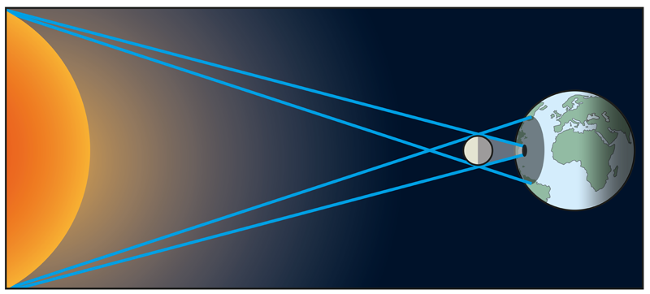
Figur 2.a: Model af solformørkelse.Hvornår opstår der en solformørkelse et sted på Jorden? Sæt 1 X.
| Udsagn | Sæt X |
| Når Jorden skygger for lyset fra Solen. | |
| Når Månen skygger for lyset fra Solen. | |
| Når det er overskyet, så Solen ikke er synlig. |
En elev har bygget et elektrisk kredsløb.
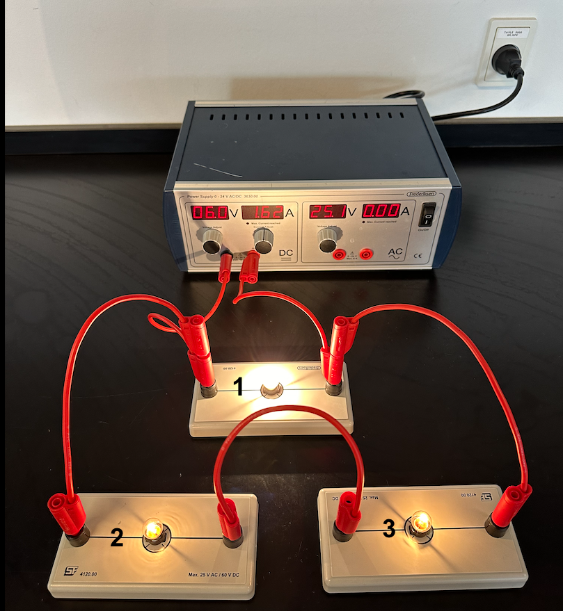
Figur 2.b: Elektrisk kredsløb med tre pærer.| Sæt X | |
| Både pære 1 og pære 2 lyser. | |
| Pære 1 lyser, men pære 2 lyser ikke. | |
| Hverken pære 1 eller pære 2 lyser. |
 Figur 2.c: Elektromagnetisk stråling.
Figur 2.c: Elektromagnetisk stråling.
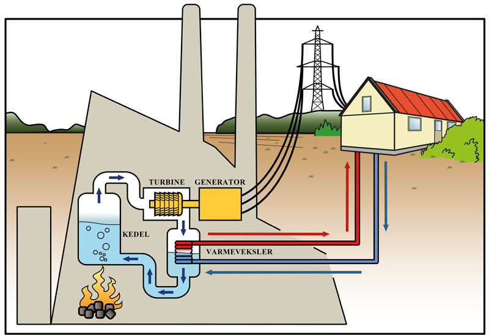
Figur 2.d: Et kraftvarmeværk.Kedlen på kraftvarmeværket i figur 2.d bliver opvarmet af halmbriketter.
| Energiomsætning | Sæt X |
| potentiel energi → elektrisk energi | |
| kinetisk energi → elektrisk energi | |
| kemisk energi → elektrisk energi |
3. Kemiske forbindelser
En elev vil undersøge om en blanding af natron og eddike kan bruges til at lave en kølepose. Eleven laver 3 forskellige observationer.
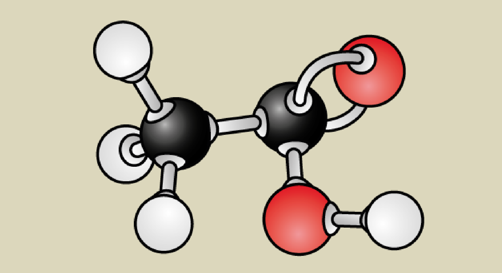
Figur 3.a: Molekylemodel af eddikesyre (C2H4O2).Hvilken farve har hydrogenatomerne på figur 3.a?
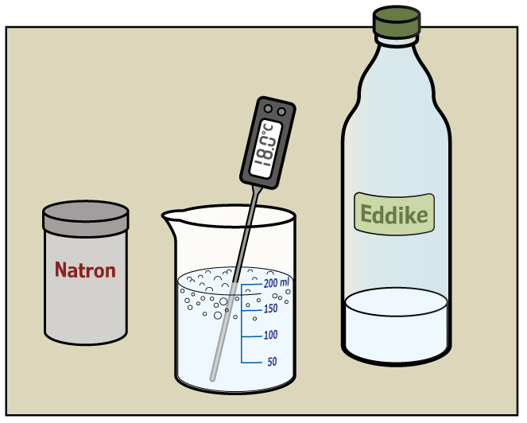
Figur 3.b: Elevens undersøgelse.En elev blander natron og eddike og måler temperaturen. Eddiken opbevares i lokalet ved temperaturen 20 °C. Se figur 3.b.
Hvilken forklaring passer på undersøgelsen af temperaturen? Anvend figur 3.b. Sæt 1 X.
| Forklaring | Sæt X |
| Reaktionen mellem natron og eddike køler væsken ned. | |
| Reaktionen mellem natron og eddike ændrer ikke væskens temperatur. | |
| Reaktionen mellem natron og eddike varmer væsken op. |
Hvad kan observeres? Anvend figur 3.b.
Samtidig med temperaturmålingen har eleven undersøgt, hvordan pH-værdien ændrer sig under reaktionen.
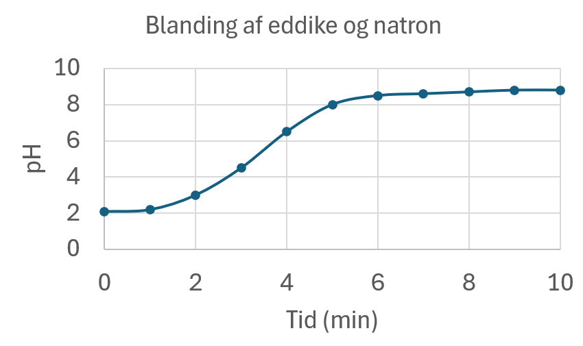
Figur 3.c: pH-værdi som funktion af tiden.Hvordan ændres surhedsgraden under den kemiske reaktion? Anvend figur 3.c. Sæt 1 X.
4. Solceller
En familie vil have et solcelleanlæg i deres have.
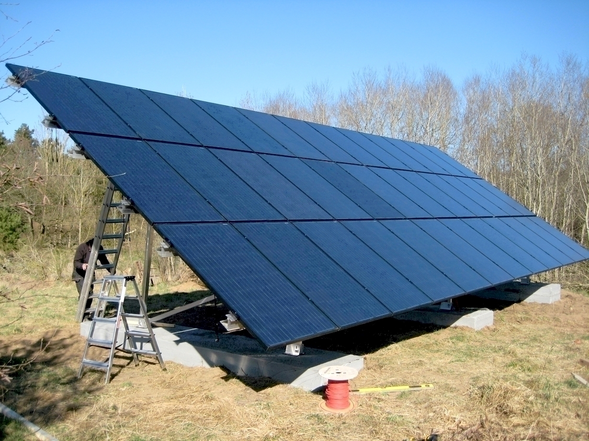
Figur 4.a: Solcelleanlæg.De bruger tabellen i figur 4.b til at finde den optimale orientering og hældning.
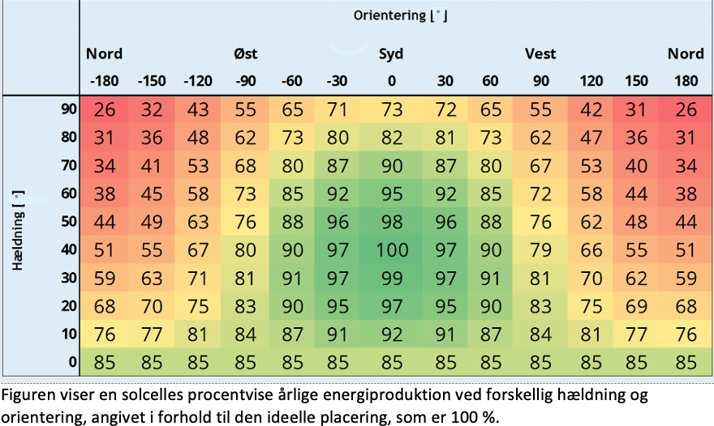
Figur 4.b: Tabel over solcellers effektivitet.Hvilken farve har den optimale placering for en solcelle? Anvend figur 4.b.
En elev vil undersøge, sammenhængen mellem en solcelles effekt og lysets intensitet.
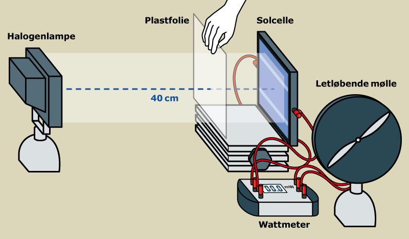
Figur 4.c: Elevens forsøgsopstilling.Eleven belyser en solcelle med en halogenlampe og ændrer lysets intensitet ved at sætte et eller flere plastfolier foran solcellen. Lysets intensitet måles i W/m2 med en lyssensor. Se forsøgsopstilling figur 4.c.
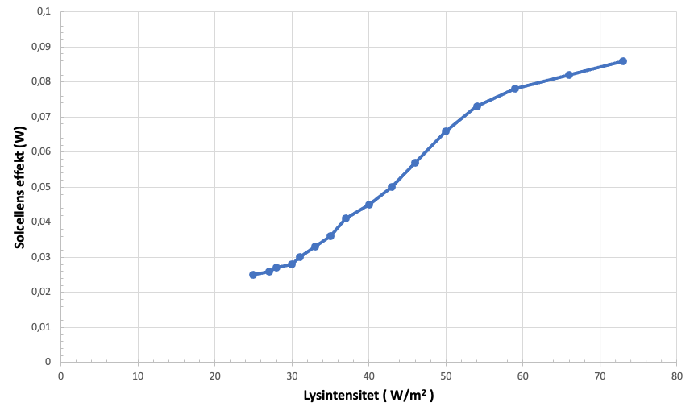
Figur 4.d: Elevens forsøgsdata.5. Carbons kredsløb
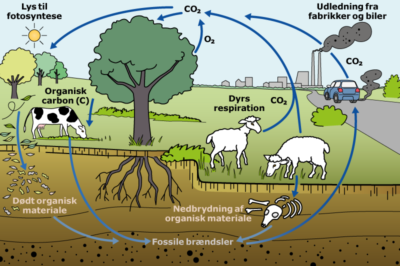
Figur 5.a: Model af carbons kredsløb.Hvilken tilstandsform har carbondioxid (CO2), når det er i atmosfæren?
Hvilken sætning om træers fotosyntese er korrekt? Sæt 1 X.
| Sætninger om fotosyntese | Sæt X |
| Ved fotosyntese optager træer CO2 og udsender oxygen (O2). | |
| Ved fotosyntese har træer behov for totalt mørke. | |
| Ved fotosyntese optager træer oxygen (O2) og udsender carbon (C). |
Ved afbrænding af fossile brændsler udleder fabrikker og benzinbiler CO2.
Hvad sker der med drivhuseffekten på Jorden, når mængden af CO2 i atmosfæren stiger?
Hvordan kan menneskets udledning af CO2 blive mindre?
Oplysninger til brug for Copydan
Anvendt materiale i Dansk:
Sara Wilkins: ”Sfo-pædagogen læste ham: ”Berit har virkelig sat min retning for livet””.
Politiken.
1.oktober, 2025.
Anvendt materiale i Engelsk:
Image credit: “Bridgeclimb Sydney”, Bridgeclimb.com, viewed November 2025.
https://www.bridgeclimb.com/packages-and-occasions/schools-youth-packages
Dette prøvesæt er omfattet af ophavsretten, jf. ophavsretslovens § 1.
Prøvesættet må alene anvendes til den på prøvesættet anførte prøve.
Al anden anvendelse af prøvesættet, herunder visning eller deling f.eks. via
internettet,
sociale medier, portaler og bøger, udgør en krænkelse af Børne- og
Undervisningsministeriets
og evt. tredjemands ophavsret og er ikke tilladt.
Overtrædelse af ophavsretten kan være erstatningspådragende og/eller strafbart.
Prøvesættet kan dog, efter at prøven er afsluttet, anvendes til undervisningsbrug på
uddannelser m.v. omfattet af den lovgivning, som Styrelsen for Undervisning og Kvalitet
administrerer.